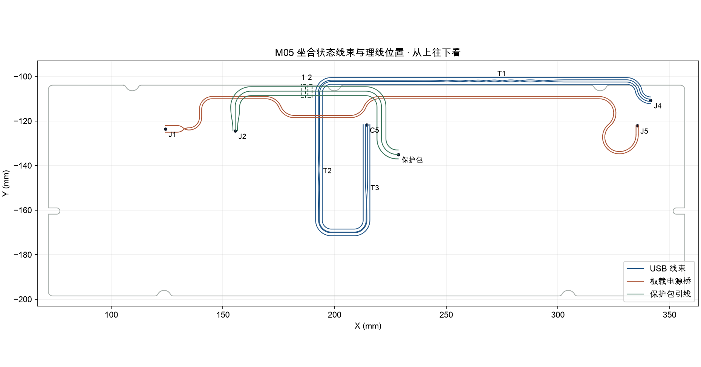

English | 中文
E73 的 M05 维修口试制件
M05 为 CORNER-05 的装拆试验增加两个可拆盖。它保留 M04 的外形尺寸、脚垫位置及上壳、钢定位板和 C5 子板的安装基准。右后脚垫槽完整位于 J4 封盖上，拆盖时脚垫一起取下。制造总表仍列 M04 作为当前底壳基线。

一套试制件需要的文件和材料
| 零件 |
数量 |
文件或规格 |
| M05 底壳 |
1 |
打印 STL · STEP |
| J2 封盖 |
1 |
打印 STL · STEP |
| J4 封盖 |
1 |
打印 STL · STEP |
| 封盖螺钉 |
4 |
M2 × 0.4，头下长度 4 mm，带平底承压面的低头内六角。头部直径 ≤3.90 mm，高度 ≤1.50 mm。SUNCO M2 低头系列的标称头部尺寸为 Ø3.8 × 1.3 mm。厂商尺寸表 |
| 封盖螺纹嵌件 |
4 |
M2 × 0.4，滚花黄铜，Ø3.2 × 2.5 mm，与 C5 规格相同。另备四枚，孔深按本页施工。 |
| 胶和脚垫 |
按需 |
用外壳规定的冷粘胶固定嵌件。使用整机清单中的四个脚垫，其中一个装在 J4 封盖上。 |
| 平行夹头工具 |
每个端口 1 套 |
工具说明提供握块打印文件、夹片下料图和试配步骤。 |
| 停放支撑 |
每个端口 1 套 |
支撑说明提供两套底座、托架、紧固件和停放顺序。 |
使用韧性工程 SLA 树脂，按毫米、100% 比例打印。三种零件各做一件，每件从 STEP 和 STL 中选一个文件。两种格式使用相同的壳体坐标。在树脂完全后固化后复查承压面、脚垫槽和盲孔。安排打印支撑和排液方向时，避免支撑损伤这些面。
制作 M05 配套线束
九根导线均按 M05 自由长度表制作。自由长度沿绝缘层测量，从一端胶壳出口量到另一端出口或保护包的应力释放面。裁线时按实际端子另计剥皮和压接的余量。试装使用 AWG28 多股铜线，成品绝缘外径最大 0.65 mm。

| 项目 |
材料与安装位置 |
| J4 到 C5 的 USB 线束 |
两只 SHR-04V-S 胶壳、八只 SSH-003T-P0.2-H 端子。1–4 号逐针直连，两根数据线的自由长度目标均为 285.189 mm。 |
| 主板电源桥 |
J5 用一只 SHR-02V-S，J1 用一只 SHR-04V-S，共四只端子。J5.1 接 J1.1，J5.2 接 J1.4，J1 中间两孔留空。交叉处两根电源桥导线都走 USB 线束上方。 |
| 保护包到 J2 |
主板端用一只 SHR-03V-S 和三只端子，针序为 PACK+、PACK−、NTC。实物须为符合规格的完整保护包，试配可用无电量块。 |
| 电池理线件 |
两件新打印件 BAT-R1 和 BAT-R2。中心分别位于外壳 X 186 mm 和 189 mm，两件的 Y 均为 −106.60 mm。BAT-R1 定位 STEP与 BAT-R2 定位 STEP保留装配坐标。 |
| 其他理线件及胶膜 |
其余 14 件刚性件和 17 片胶膜的下料形状沿用现有理线件套件。两片电池胶膜装到新支架，可对照 BAT-R1 和 BAT-R2 的折后模型。 |
两件电池支架按其他理线件的比例和工艺打印。试配壳底时核查标称 0.10 mm 的胶层。线槽内避免溢胶，固定后导线仍需能沿槽轴向滑动。
从 J4 向 C5 按下表布置数据对的绞合段。圈数对应 CAD 中心线几何。制作后可用坐合线束 STEP核对完整走线形状。
| 标记 |
位置 |
中心线段长 |
圈数 |
| T1 |
后侧直段，X 从 312.190 到 230.000 mm，Y 为 −102.000 mm |
82.190 mm |
3.060 |
| T2 |
向前直段，X 为 193.000 mm，Y 从 −126.674 到 −164.500 mm |
37.826 mm |
0.613 |
| T3 |
回程直段，X 为 214.313 mm，Y 从 −164.500 到 −142.000 mm |
22.500 mm |
0.327 |
按新线长，四根供电和回流导线合计 1.095 m。沿用原充电模型，60 °C 下纳入计算的串联电阻为 0.426 Ω，500 mA 时比 M04 多约 1.55 mV 压降。M05 线束与试装报告记录了计算前提、未计入的损耗，以及按 M05 实际壳体模型检查的三种板厚各七个插头姿态。
装电子件前试配封盖
- 先把两只盖分别放进对应的凹槽，确认可垂直向下取出。每侧标称留缝 0.35 mm，CAD 外表面齐平。修整时保持封盖与底壳齐平，也保留右后脚垫槽原有高度。
- 四个嵌件盲孔按 Ø3.35 ±0.05 mm 修孔。从孔轴中心所在的承压台阶计算，盲孔深度为 2.90 mm。冷粘嵌件，外端面比该处台阶内缩 0.30 mm。待空壳上的胶固化后再装电池和 PCB。
- 确认螺钉能压住封盖，末端与盲孔底留有间隙。CAD 中标称螺纹重叠 2.15 mm，螺钉末端距孔底 0.45 mm。实测头部尺寸和孔底余量，并检查封盖受力、树脂裂纹、嵌件松动及装脚垫后是否摇晃。
- 将右后脚垫完整贴在 J4 封盖槽内，留出两只螺钉的位置。取下两只盖后可接近 J2 和 J4。试装用无电池尺寸量块代替电池，并保持线束断电。
- 按上图试放 C5、临时定位的理线件、主板和断电线束。上电前测通断，并核对 J1 中间两孔留空。确认电池侧弯在两只理线件之前形成，USB 前侧回环能向前移动，电源桥留在其上方。拆卸顺序为先 J2、再 J4，最后垂直抬起主板和定位板。在永久固定理线件前，取下封盖验证实际工具空间和导线滑动。
CAD 报告检查了外形尺寸、四处新增嵌件的支撑、八处原有螺孔保护区、封盖拆出行程，以及打开后 J2、J4 的通道。关壳装拆检查记录了配套的线束试验。M05 用于机械试配，仍需验证实际拔插工具、带线完整拆装、承载和反复拆装，之后才能用于正式装配。
上壳和封盖已拆下且两个插头已停放时，连续抬升报告检查了三种板厚下 25 mm 的直线行程。模型中的电源桥与所检静止物体始终至少保有 0.15 mm 间隙。报告也核对了移动的 PCB 和刚体包络与全部七根静止导线之间的空间。实际插头拔出、导线随动和工具受力仍需用样件验证。